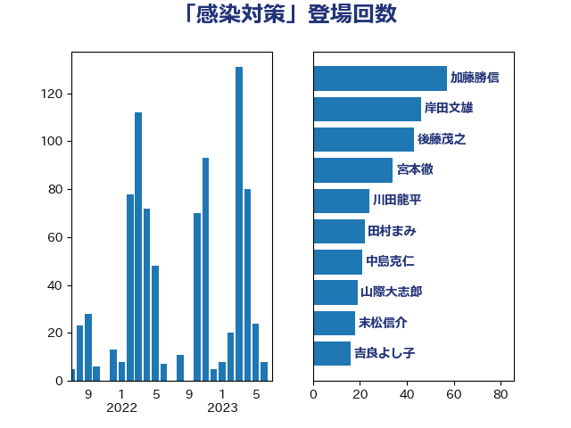

単語「感染対策」

| 加藤勝信 | 自由民主党 | 57 回 |
| 岸田文雄 | 自由民主党 | 46 回 |
| 後藤茂之 | 自由民主党 | 43 回 |
| 宮本徹 | 日本共産党 | 34 回 |
| 川田龍平 | 立憲民主党 | 24 回 |
| 田村まみ | 国民民主党 | 22 回 |
| 中島克仁 | 立憲民主党 | 21 回 |
| 山際大志郎 | 自由民主党 | 19 回 |
| 末松信介 | 自由民主党 | 18 回 |
| 吉良よし子 | 日本共産党 | 16 回 |
| 西村康稔 | 自由民主党 | 13 回 |
| 友納理緒 | 自由民主党 | 10 回 |
| 石垣のりこ | 立憲民主党 | 9 回 |
| 松本尚 | 自由民主党 | 8 回 |
| 星北斗 | 自由民主党 | 8 回 |
| 伊佐進一 | 公明党 | 8 回 |
| 鈴木英敬 | 自由民主党 | 7 回 |
| 窪田哲也 | 公明党 | 7 回 |
| 福重隆浩 | 公明党 | 7 回 |
| 東徹 | 日本維新の会 | 7 回 |
| 天畠大輔 | れいわ新選組 | 7 回 |
| 伊藤孝江 | 公明党 | 7 回 |
| 井上哲士 | 日本共産党 | 7 回 |
| 永岡桂子 | 自由民主党 | 6 回 |
| 井出庸生 | 自由民主党 | 6 回 |
| 神谷政幸 | 自由民主党 | 5 回 |
| 田中健 | 国民民主党 | 5 回 |
| 本田顕子 | 自由民主党 | 5 回 |
| 倉林明子 | 日本共産党 | 5 回 |
| 高階恵美子 | 自由民主党 | 4 回 |
| 長友慎治 | 国民民主党 | 4 回 |
| 自見はなこ | 自由民主党 | 4 回 |
| 島村大 | 自由民主党 | 4 回 |
| 吉田はるみ | 立憲民主党 | 4 回 |
| 鰐淵洋子 | 公明党 | 3 回 |
| 遠藤良太 | 日本維新の会 | 3 回 |
| 赤嶺政賢 | 日本共産党 | 3 回 |
| 藤丸敏 | 自由民主党 | 3 回 |
| 菅義偉 | 自由民主党 | 3 回 |
| 芳賀道也 | 国民民主党 | 3 回 |
| 稲津久 | 公明党 | 3 回 |
| 清水真人 | 自由民主党 | 3 回 |
| 浜地雅一 | 公明党 | 3 回 |
| 浜口誠 | 国民民主党 | 3 回 |
| 浅野哲 | 国民民主党 | 3 回 |
| 水岡俊一 | 立憲民主党 | 3 回 |
| 柚木道義 | 立憲民主党 | 3 回 |
| 山田勝彦 | 立憲民主党 | 3 回 |
| 佐藤英道 | 公明党 | 3 回 |
| 鳩山二郎 | 自由民主党 | 2 回 |
| 馬場伸幸 | 日本維新の会 | 2 回 |
| 青山大人 | 立憲民主党 | 2 回 |
| 長妻昭 | 立憲民主党 | 2 回 |
| 赤澤亮正 | 自由民主党 | 2 回 |
| 田畑裕明 | 自由民主党 | 2 回 |
| 深澤陽一 | 自由民主党 | 2 回 |
| 河野義博 | 公明党 | 2 回 |
| 早稲田ゆき | 立憲民主党 | 2 回 |
| 岡本あき子 | 立憲民主党 | 2 回 |
| 山本香苗 | 公明党 | 2 回 |
| 小沼巧 | 立憲民主党 | 2 回 |
| 宮路拓馬 | 自由民主党 | 2 回 |
| 塩川鉄也 | 日本共産党 | 2 回 |
| 仁木博文 | 無所属 | 2 回 |
| 中川宏昌 | 公明党 | 2 回 |
| 中山展宏 | 自由民主党 | 2 回 |
| 高橋光男 | 公明党 | 1 回 |
| 高木かおり | 日本維新の会 | 1 回 |
| 青木愛 | 立憲民主党 | 1 回 |
| 階猛 | 立憲民主党 | 1 回 |
| 阿部司 | 日本維新の会 | 1 回 |
| 長谷川淳二 | 自由民主党 | 1 回 |
| 長浜博行 | 無所属 | 1 回 |
| 鈴木俊一 | 自由民主党 | 1 回 |
| 野間健 | 立憲民主党 | 1 回 |
| 道下大樹 | 立憲民主党 | 1 回 |
| 逢坂誠二 | 立憲民主党 | 1 回 |
| 茂木敏充 | 自由民主党 | 1 回 |
| 簗和生 | 自由民主党 | 1 回 |
| 笠浩史 | 無所属 | 1 回 |
| 竹谷とし子 | 公明党 | 1 回 |
| 稲富修二 | 立憲民主党 | 1 回 |
| 秋野公造 | 公明党 | 1 回 |
| 福島みずほ | 社会民主党 | 1 回 |
| 磯崎仁彦 | 自由民主党 | 1 回 |
| 石川香織 | 立憲民主党 | 1 回 |
| 石川博崇 | 公明党 | 1 回 |
| 石井苗子 | 日本維新の会 | 1 回 |
| 石井啓一 | 公明党 | 1 回 |
| 畦元将吾 | 自由民主党 | 1 回 |
| 田村憲久 | 自由民主党 | 1 回 |
| 田名部匡代 | 立憲民主党 | 1 回 |
| 牧山ひろえ | 立憲民主党 | 1 回 |
| 片山大介 | 日本維新の会 | 1 回 |
| 片山さつき | 自由民主党 | 1 回 |
| 清水貴之 | 日本維新の会 | 1 回 |
| 浜野喜史 | 国民民主党 | 1 回 |
| 池下卓 | 日本維新の会 | 1 回 |
| 江島潔 | 自由民主党 | 1 回 |
| 水野素子 | 立憲民主党 | 1 回 |
| 比嘉奈津美 | 自由民主党 | 1 回 |
| 櫻井充 | 自由民主党 | 1 回 |
| 森山浩行 | 立憲民主党 | 1 回 |
| 森屋宏 | 自由民主党 | 1 回 |
| 柴田巧 | 日本維新の会 | 1 回 |
| 林芳正 | 自由民主党 | 1 回 |
| 松野明美 | 日本維新の会 | 1 回 |
| 松野博一 | 自由民主党 | 1 回 |
| 杉尾秀哉 | 立憲民主党 | 1 回 |
| 本田太郎 | 自由民主党 | 1 回 |
| 斉藤鉄夫 | 公明党 | 1 回 |
| 打越さく良 | 立憲民主党 | 1 回 |
| 御法川信英 | 自由民主党 | 1 回 |
| 岸真紀子 | 立憲民主党 | 1 回 |
| 岩渕友 | 日本共産党 | 1 回 |
| 山田美樹 | 自由民主党 | 1 回 |
| 山本博司 | 公明党 | 1 回 |
| 山本剛正 | 日本維新の会 | 1 回 |
| 山口那津男 | 公明党 | 1 回 |
| 山井和則 | 立憲民主党 | 1 回 |
| 宮本岳志 | 日本共産党 | 1 回 |
| 宮口治子 | 立憲民主党 | 1 回 |
| 宗清皇一 | 自由民主党 | 1 回 |
| 安江伸夫 | 公明党 | 1 回 |
| 太栄志 | 立憲民主党 | 1 回 |
| 塩田博昭 | 公明党 | 1 回 |
| 城井崇 | 立憲民主党 | 1 回 |
| 國重徹 | 公明党 | 1 回 |
| 國場幸之助 | 自由民主党 | 1 回 |
| 国光あやの | 自由民主党 | 1 回 |
| 吉田とも代 | 日本維新の会 | 1 回 |
| 古川元久 | 国民民主党 | 1 回 |
| 勝部賢志 | 立憲民主党 | 1 回 |
| 伊藤岳 | 日本共産党 | 1 回 |
| 伊藤孝恵 | 国民民主党 | 1 回 |
| 伊東信久 | 日本維新の会 | 1 回 |
| 丸川珠代 | 自由民主党 | 1 回 |
| 中川貴元 | 自由民主党 | 1 回 |
| 三浦信祐 | 公明党 | 1 回 |